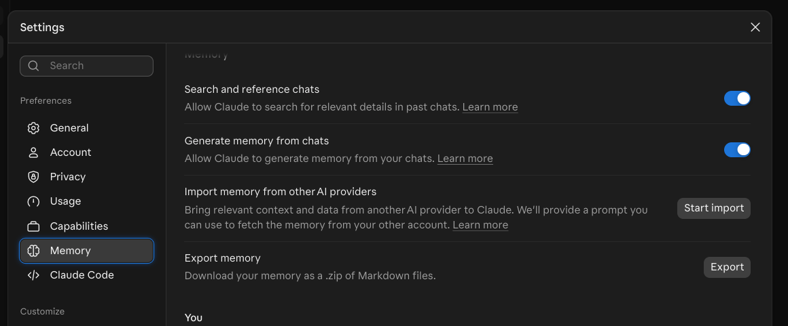

Getting started with Claude
Build a Project you’ll keep using
A 60-minute, hands-on class in the Claude app. You’ll build a Project (a Claude workspace with its own instructions and files), use it on a real task, check what it gives you, and leave with a tool you can reuse. No programming needed.
Sign in to Claude, pick your kit, and (optionally) install the Claude phone app: see Setup for this class.
Claude @ Yale gives an overview of Yale’s Claude offering. Request a Claude account before class if you can.
You can still take part without one. In class, pair with a neighbor who has an account, or follow along in Clarity for the prompting sections. You can also use a free Claude account, but don’t put any Yale information in it: use only the public class files. See Access and alternatives.
Ground rule: no patient information or other sensitive data today. Every file in class is public or made up.
1. Welcome and sign in
Sign in to Claude in a browser tab or app now. Open this page: https://cwml.github.io/getting-started-with-claude/part1.html
By the end of this class, you’ll be able to
- Identify the right tool and settings for your data.
- Apply prompting patterns to a real task.
- Evaluate Claude’s answers and citations before you use them.
- Create a Project you can reuse for your own work.
2. Trust but verify
Claude is capable. Its output still needs checking.
Trust: Claude can do real work
- It reads long documents quickly, then summarizes, drafts and reorganizes them well.
- It follows detailed instructions and handles tasks with several steps.
- Give it real tasks, not just quick questions.
Verify: check the output against the evidence
- Claude sounds just as sure when it’s wrong. It can misread a source, miss a detail or invent a citation.
- Check every quote, number, rule and citation against the source before you use it.
- You’re accountable for what you use, not Claude.
You’ll practice this later today in Verify before you use it.
3. Which Claude for which data
Yale offers two versions of Claude. Check which one your data needs before you open a chat.
For details on both, see AI at Yale, Claude.
HIPAA-supported doesn’t mean approved. It describes a contract and safeguards. It doesn’t approve your project, every feature, or every data set.
Before you use Claude for sensitive work:
- Follow Yale’s data classification. See also the ITS service page for Claude Enterprise.
- Removing a name isn’t de-identification. Dates, ZIP codes, record numbers, and rare details can identify someone.
- Your IRB protocol and any data use agreement may forbid sending data to outside AI services, even de-identified data.
More detail, including which features the HIPAA-supported version covers: Quick reference: which Claude for which data.
Safe habits: describe the situation instead of pasting the record, use made-up examples, and share structure (a template or blank form) rather than content.
4. Check your settings
Set up your account and memory before you upload anything.
Account settings: your role and instructions
Your turn. Click your name or initials (lower left) > Settings > General (check before class).
- What best describes your work? Pick the closest role. Claude uses it to fit its answers to your field.
- Personal preferences (the box asking what Claude should consider in its responses): add a line or two about how you like answers. Claude applies them in every chat.
For example:
Write in plain language. Use short paragraphs and bullet points. Ask me a question if my request is unclear.Keep it general and put nothing sensitive in it. These instructions go with every chat. Later today you’ll write Project instructions, which apply to one piece of work.
Watch, then do: memory settings
Your turn. Click your name or initials (lower left) > Settings > Memory.
- Search and reference chats lets Claude look through your past chats for details. Keep it on or off?
- Generate memory from chats lets Claude remember things from your chats. Keep it on or off?

Export memory downloads everything Claude remembers about you, as Markdown files.
To turn memory off for one chat: + > Memory, before your first message.
Incognito: what it does and doesn’t do
The ghost icon in a new chat starts an incognito chat. It isn’t saved to your history or memory, but:
- It isn’t available inside Projects.
- Chats are still kept [30 days by default, or Yale’s setting] and appear in your organization’s exports.
- In the new combined layout, it can’t create files or run code.
Incognito changes what Claude remembers, not what data is allowed.
5. Everyday chat
Not everything needs a Project. Use a plain chat for one-off questions, quick drafts and lookups.
Your turn. Click New chat (outside any Project) and send:
Give me three ways to make a long email easier to read.What’s in the chat box
| Control | What it does |
|---|---|
| Type, paste or drop a file | Enter sends; Shift+Enter starts a new line. Drag a file onto the box to attach it. |
| + (lower left) | Add files or photos, and turn tools on or off for this chat (below). |
| Typing / | Opens the same tools from the keyboard, including skills (if enabled). |
| Model menu (near to Send) | Choose the model and effort. More in Models, effort and skills. |
| Microphone | Dictate instead of typing (if enabled; check before class). |
| Ghost icon (new chats only) | Starts an incognito chat. See Incognito. |
Research, web search and memory
These three switches are in the + menu. A check mark means on. They apply to this chat.
| Switch | What it does | Use it for |
|---|---|---|
| Web search | Looks things up online and shows its sources | Recent facts and quick lookups |
| Research (if enabled) | Runs many searches over several minutes and writes a cited report | A literature scan or a background brief |
| Memory | Uses and adds to your memory in this chat. Set it before your first message | Turn it off for one-off or sensitive chats |
The + menu can also list connectors (if enabled), such as PubMed, which let Claude search other tools.
Click + and find the three switches. Then type / and look at the list. Don’t pick anything yet.
A source isn’t proof. Open the links and check that they say what Claude says they say.
6. Models, effort and skills
Two more things you can change in any chat: which model answers, and which skills it can use.
Models and effort
The model menu next to Send sets the model and the effort.
- Bigger models handle harder tasks. Smaller ones are faster and use less of your limit.
- On the current models, thinking is always on, so effort is the main dial.
- Start with the default. Go smaller for simple tasks such as reformatting; go bigger only when the answer isn’t good enough.
- More effort costs more time, usage and energy.
- Your admin may hide some models or effort levels.
Use the smallest model and lowest effort that does the job.
Skills
A skill is a saved how-to that Claude can use in any chat. Built-in skills make Word, Excel, PowerPoint and PDF files (if enabled).
- Claude uses a skill when your request matches it, such as “turn this into a one-page Word handout.”
- Type / in the chat box to see your skills and pick one yourself.
- See and turn skills on or off in Customize > Skills.
A Project is a workspace for one piece of work. A skill is a how-to Claude can use in any chat.
7. Watch: build a Project
A Project is a workspace for one ongoing piece of work: its own instructions, files, and memory.
Five steps
- Projects > + New Project > name it “Article Explainer” (Kit B: “Committee Assistant”).
- Set project instructions > paste the instructions > change one line to fit your work.
- On the Project page, under Memory, turn Use account memory off.
- + > add your kit’s files.
- Start a new chat in the Project and send the test prompt.
8. Your turn: build your Project
Use the kit you chose: Kit A, Article Explainer (default) or Kit B, Committee Assistant (for administrative staff).
Your turn: build it
- Download your kit’s files (links below).
- Projects > + New Project, then name it.
- Set project instructions: paste them and change one line to fit your work.
- Under Memory, turn Use account memory off.
- + > add your kit’s files.
- Start a new chat in the Project and send the test prompt:
In 3 bullets: what files do you have, what will you do for me, and
what will you refuse to do?Green card when Claude names your files and quotes one of your rules.
Your kit
For anyone who reads research articles: turn an article into an accurate, plain-language explainer for your audience.
Files (or download both: part1-kit-a.zip)
- explainer-style-guide.md: a made-up, one-page style guide with rules Claude must follow.
- hickey-2025-telehealth-htn.md: a text copy of an open-access trial, Hickey MD et al., PLoS Med 2025;22(6):e1004632 (original article), reformatted for teaching under its Creative Commons license. It’s a text file so that searching with Ctrl/Cmd+F works in segment 11.
Project name: Article Explainer
Project instructions: copy, paste, then change one line (for example, swap “medical-school audiences” for your own audience).
You help me turn research articles into accurate, plain-language
explainers for medical-school audiences.
Sources
- Use only the files in this Project unless I say otherwise. The
article is the source of truth; the style guide sets format and tone.
- Never invent numbers or quotes. If the article doesn't say it,
write "NOT IN ARTICLE."
- Label anything from outside the article as [general knowledge].
- Don't add references unless I ask. If I ask, mark each one
UNVERIFIED and give its PMID or DOI so I can check it.
How to work
- Before a new explainer, ask me up to 3 questions about my audience
and purpose, then wait for my answers.
- Report results with the actual numbers: both groups, the
difference, and the 95% confidence interval.
- Use cautious language: "was associated with," not "caused," and
"early evidence" for pilot or small studies.
- Flag anything that needs a clinician's or librarian's review
before I share it.
Privacy
- I won't share patient information here. If I paste anything that
looks like a name, MRN, date of birth, or other identifier, stop
and remind me not to.For administrative staff: turn rough meeting notes into a summary email, an action-item table, and next month’s agenda.
File (or download: part1-kit-b.zip)
- committee-pack-synthetic.md: a made-up committee charter plus rough meeting notes that use roles, not names.
Project name: Committee Assistant
Project instructions: copy, paste, then change one line (for example, name the kind of committee you staff).
You help me staff a curriculum committee.
Sources
- Use only the files in this Project. If the notes don't say it,
write "NOT IN NOTES."
- Label anything not from the files [general knowledge].
How to work
- Ask me up to 3 questions before drafting, then wait for my answers.
- Refer to people by role, never by name.
- Every action item needs an owner (role), a due date, and the line
from the notes it came from.
- Flag anything that looks confidential (personnel, student records,
appeals) and leave it out of drafts.
Privacy
- I won't share patient information here. If I paste anything that
looks like a name, MRN, date of birth, or other identifier, stop
and remind me not to.Why it’s worth keeping: swap in the next open-access article and keep the instructions and style guide, or edit the style guide’s Audiences section for your course, clinic, or newsletter. Kit B becomes a reusable notes-to-minutes tool for non-confidential committees. Library-licensed PDFs may not allow upload: use open-access articles or check [library license guidance]. More: Quick reference: Projects and skills.
The privacy line is advice, not enforcement: Claude will usually follow it, but nothing stops you from pasting something you shouldn’t.
9. Watch: anatomy of a strong prompt
The Project carries the context, so the prompt can stay short and reusable.
What each part does
| Part of Turn 1 | Pattern |
|---|---|
| “I’m a [role]… for [audience]” | Give context; say who it’s for |
| “Ask me up to 3 questions… Wait.” | Ask first, with a clear stop |
| “Give me: 1. … 5.” | Numbered output |
| “150 words or fewer… use only the article” | Constraints |
| “Where this came from” table | Every claim traced to a quote |
10. Your turn: run it, then push back
Start a new chat inside your Project. Use the default model and effort.
Your turn: Turn 1
Copy Turn 1 for your kit below. Fill in the two brackets, send, then answer Claude’s questions.
Kit A: Turn 1
I'm a [your role, e.g., second-year medical student / clinic nurse
educator / research coordinator / library staff].
I need an explainer of the article in this Project for
[audience, e.g., my journal club / adults in a blood-pressure clinic /
our department newsletter].
Before you write anything, ask me up to 3 questions about my audience
and purpose. Wait for my answers.
Then, following the style guide in this Project, give me:
1. Study at a glance: question, design, who was studied, where, and
how many.
2. The main result with the actual numbers (both groups, the
difference, 95% CI), and the main limitation the authors state.
3. A plain-language version for my audience, 150 words or fewer.
4. Three questions a careful reader should ask about the methods or
conclusions.
5. A "Where this came from" table: for every number or claim in
parts 1-3, the exact sentence from the article and its section,
or [general knowledge]. If you can't find support, write
NOT IN ARTICLE.
Rules: use only the article; don't add references; if the article
is unclear or inconsistent on something, say so.Stuck on Claude’s questions? Fast answers:
Busy readers with no stats background; goal is a 2-minute read; tone
friendly but accurate.Kit B: Turn 1
I staff the [committee name]. Before you start, ask me up to 3
questions about the audience or what has already been sent. Wait.
Then, using only the files in this Project:
1. A summary email to the committee, under 200 words.
2. An action-item table: action | owner (role) | due date | exact
line from the notes. Use NOT IN NOTES if the notes don't say.
3. Next month's agenda that fits in 60 minutes, each item tied to
one of the charter's duties.
4. Anything that should NOT go into a wider email, and why.
Roles only, no names; don't invent owners, dates, or decisions.Your turn: push back (Turn 2)
In the same chat, send Turn 2. Kit B: use the Kit B version below.
Kit A: Turn 2
Now act as a skeptical reviewer of your own explainer.
- Flag any sentence that overstates the result (causal language,
"proves," or ignoring that this was a pilot).
- Check the plain-language version against every rule in the style
guide and tell me which rule each problem breaks.
- Check for assumptions about culture, literacy, language, gender,
or race, for race-based clinical claims, and for who these
results might not apply to.
- List each problem with a fix, then give me the revised
plain-language version.With a neighbor: what did the second turn change?
Kit B: Turn 2
Now act as a careful committee chair reviewing your drafts.
- Check every action item: is the owner, due date, and quoted line
really in the notes? Mark anything you can't trace NOT IN NOTES.
- Check the agenda against the charter's duties and the 60-minute
limit.
- Flag anything confidential (personnel, student records, appeals)
that slipped into a draft.
- Then rewrite the summary email for the full faculty list, leaving
out anything that should stay within the committee.11. Verify before you use it
Check against the source, not against Claude. Don’t cut: this segment stays even when class runs late.
Your turn: check quotes and rules
Quote check (2 min). Pick 2 rows of your “Where this came from” table. Open the article in a new browser tab, then search for each quote with Ctrl/Cmd+F. Mark it: exact, paraphrased, or not there.
Rule check (1 min). Is the plain-language version 150 words or fewer? If it’s for patients, does it end with “Talk with your care team”? Does it avoid “proves” and “breakthrough”?
Bonus: does the article agree with itself about how many people were in each group?
Kit B: what to check
- Open the committee pack in a new browser tab. Trace 2 action items to the exact line in the notes with Ctrl/Cmd+F. Exact, paraphrased, or not there?
- Was the confidential student appeal left out of the drafts?
- Did Claude invent an owner or due date for the survey follow-up, or write NOT IN NOTES?
- Did it apply the charter’s “action items go out within 3 business days” rule?
Your turn: check a citation (Turn 3)
Send this, then look up one PMID at pubmed.ncbi.nlm.nih.gov (your phone works). Kit B: your Turn 3 is below.
Kit A: Turn 3
Suggest three other published studies on this topic a reader could
look at next. For each, give authors, year, journal, and PMID, and
mark each UNVERIFIED.Does it exist? Do the title, authors, and year match? If Claude declines or labels it UNVERIFIED, that’s good behavior. Check anyway.
Kit B: Turn 3
When do this meeting's action items have to go out, and when is the
next meeting? For each rule you use, quote the charter line and show
your date math. If the files don't say, write NOT IN NOTES.Then open the committee pack and check each quoted charter line yourself. If you have time, watch someone at your table do the PubMed check: that’s the same skill.
Your turn: add one rule
Open your Project instructions. Add one line based on what you caught today.
For example:
Quote the exact sentence for every number, and flag any place the
article contradicts itself.Show of hands: how many quotes were exact? Any citation that didn’t match?
You’re accountable for what you use
- Check against the source, not against Claude.
- Watch for bias and overstatement: who might this not apply to?
- Disclose your AI use. Follow journal policy (ICMJE, COPE); a template is on the site.
- NIH: applications substantially developed by AI aren’t considered original (NOT-OD-25-132), and generative AI is prohibited in peer review (NOT-OD-23-149).
- Systematic or scoping review? Follow RAISE and talk to a librarian.
12. Take it with you: the phone app
Your Project should sync to the Claude phone app. Optional.
Watch, then try: your Project on your phone
Optional. If you installed the app: open Claude > Projects > your Project and ask, by voice or typing:
In two sentences, what's the main limitation of this study?Kit B:
In two sentences, what's the most urgent action item from these notes, and who owns it?Create Projects on your laptop; they should open on your phone too. No phone? Keep verifying on the laptop.
Phone rules
- No photos of patient lists, charts, screens, or whiteboards.
- Follow [mobile device policy].
- The Code tab is where Claude Code’s
/rcshows up (if enabled; not available in the HIPAA-supported version). If you don’t see it, your plan or organization may not include it.
Research (if enabled) on the phone searches only the web and skips connectors (if enabled) such as PubMed, without warning. More: Quick reference: mobile.
13. Cowork and the bridge to Claude Code
From chat to tasks, and from the app to Claude Code.
Cowork in 30 seconds
- Since Oct 23, 2026, Cowork is part of the Enterprise chat experience (if your admin turned it on). It carries out multi-step tasks, not just answers.
- Not for high-risk data. Web pages and files can hide instructions that steer it (“prompt injection”).
- The HIPAA-supported version keeps the older layout; Cowork may be off or limited there. Check with [ITS].
From today to Claude Code
| What you built today | What it becomes in Claude Code |
|---|---|
| Project instructions | A CLAUDE.md file in your project folder |
| Project files | Files in the project folder (for example, docs/) |
| A skill (Word handout) | A SKILL.md file (your app skills can sync in) |
| Memory settings | Claude Code’s memory, reviewed with /memory |
| Model menu, effort, phone Code tab | /model, /effort, /rc (if enabled) |
| + or / in the chat box | / in the Claude Code panel: commands and skills |
Next class: Analyzing research data with Claude Code (90 min). Class page
14. Exit ticket and close
Four questions, one per objective. Show of hands or [exit-ticket form link].
Exit ticket
- A spreadsheet of clinic no-shows with MRNs: which Claude, if any? And which setting did you lock today before uploading?
- Name one pattern from your prompt that changed the output.
- Claude gives you a PMID. What do you do first?
- One low-risk recurring task you’ll use your Project for this week.
Feedback: [feedback form link]
Where to go next
- Quick reference: settings, prompts, verification, and more
- Claude Academy: free courses from Anthropic
- Analyzing research data with Claude Code: the next class
- Library help: [literature search consults, evidence synthesis service, office hours]
- Questions about tools and data: [HSIT / ITS AI help]
On the Quick reference page:
- Which Claude for which data
- Settings and privacy
- Projects and skills how-to
- Model, effort and the Claude Code commands
- The phone app
- Prompt library
- Verify and disclose
- Cowork in brief
- More places to learn
Also useful: Claude Help Center · [teaching-center AI guidance] · [Office of Research Integrity] · [HSARG] · [AIR Tracks B–F offerings]